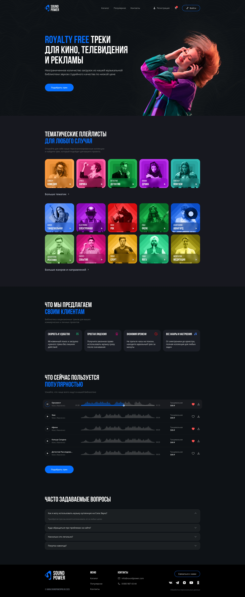
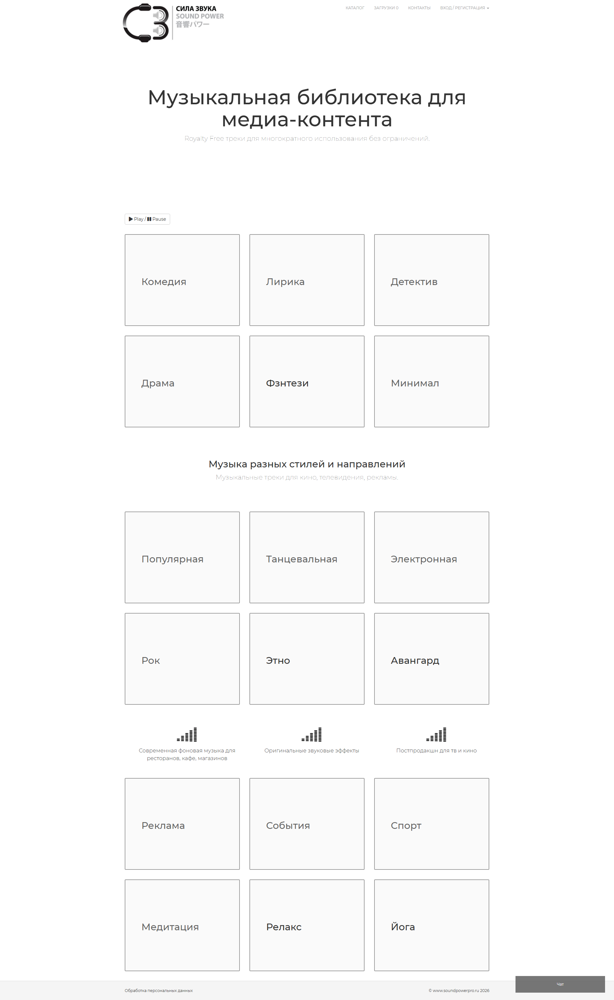
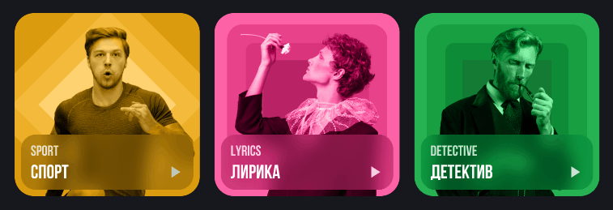
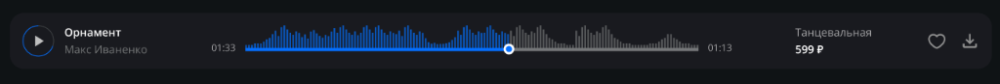
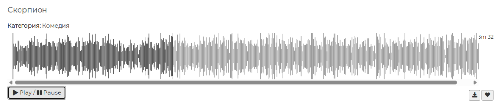
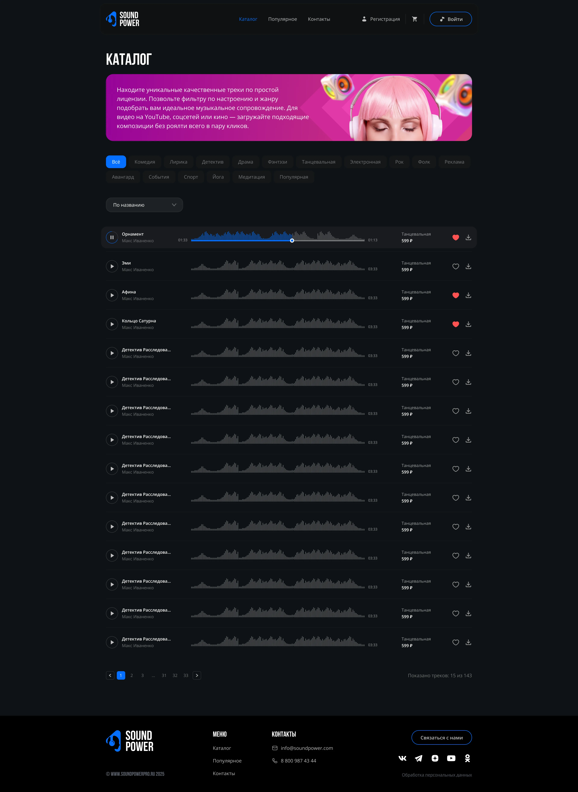
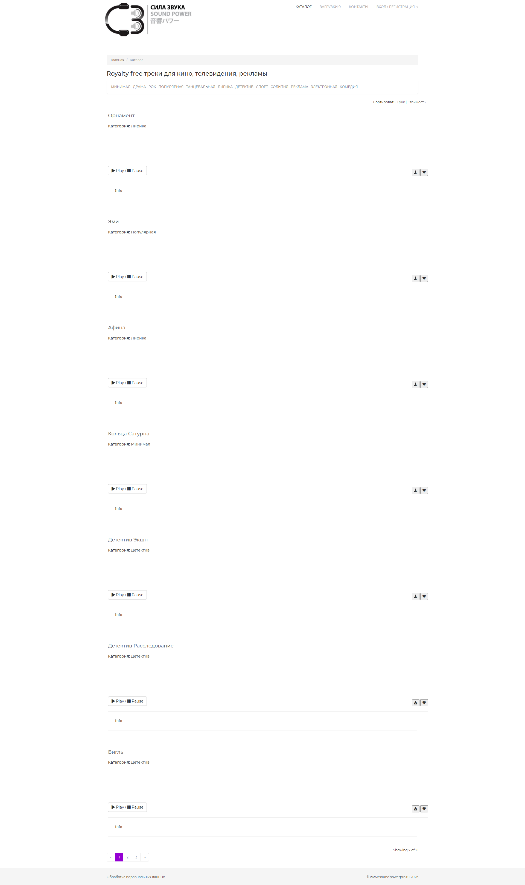
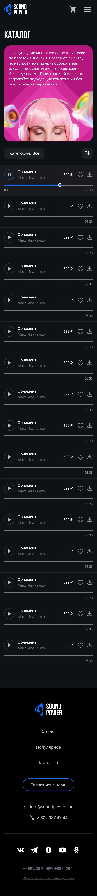

Soundpower
Редизайн интернет-магазина музыки: сделать сервис продающим, стильным и сопоставимым с современными трендами
- 13 гипотез проверил в CustDev с респондентом из медиа-сферы: 9 подтвердились, 4 опровергнуты — решения строились на реальных болях интерфейса, а не на интуиции.
- Сократил путь к покупке до 0 кликов: убрал спрятанную цену из аккордеона — стоимость видна сразу у каждого трека, внедрена мультифильтрация сразу по нескольким жанрам.
- Сделал удобный плеер прямо в строке каталога: трек можно сразу послушать и перемотать по таймлайну, увидеть жанр, цену и в один клик скачать превью или добавить в избранное.
- Глубоко проработал визуал тематических плейлистов: детальная работа над карточками жанров и настроений — уникальная колористика и образы под каждый стиль сделали витрину современной и вовлекающей.


01. Запрос заказчика и реальная проблема
Soundpower — интернет-магазин royalty-free музыки для видеомонтажёров, блогеров и медиа-проектов. Заказчик — предприниматель, который сам развивает свой бизнес. Он пришёл с живой, честной проблемой, но без ТЗ:
«Сайт делали на скорую руку как прототип: дизайн слабый, выглядит серо и не цепляет. Продаж почти нет, людям неинтересно, интерфейс неудобный — слушать треки тяжело. Хочется сделать стильно, современно и сопоставимо с текущими трендами, чтобы сервис реально продавал. Короче, надо сделать конфетку».
От 16-летнего видеоблогера до 45-летнего продюсера
Пользователи сервиса — весь срез создателей медиаконтента: блогеры, стримеры, подкастеры, режиссёры и коммерческие продакшены. Главный продуктовый вызов — соблюсти баланс: интерфейс должен оставаться кристально простым для новичка (быстрый старт, готовые плейлисты, прозрачные цены) и одновременно давать профессиональную скорость видеомонтажёру (точная мульти-фильтрация, визуальный поиск кульминации на Waveform и чистая лицензия без страйков).
02. Глубинные интервью: 13 гипотез
Скрытая цена
Респондент не покупает, если стоимость спрятана в спойлер: «Пока не добавлю в корзину — цену не вижу». В новой версии цена открыта сразу в строке каталога (0 кликов).
Слепой плеер
Видеомонтажеры не слушают трек с 00:00 — они ищут глазами пик волны (дроп). Внедрили интерактивный Waveform с перемоткой в 1 клик.
Одинокий трек
Один трек на главной создавал ложное ощущение, что в библиотеке мало музыки. Собрали подборку топ-5 треков и живые карточки настроений.
«Понятно только что скачать музыку, но не понятно какую и для чего? Что такое Royalty Free?»
«Как будто мало треков, по 1-2 на жанр. Хотелось бы подборку побольше.»
«Нажму на квадратик. Все интуитивно понятно, но не очень красиво.»
«В меню посмотрел бы. Но почему корзина называется "Загрузки"?»
«Странно блоки раскинуты по всей странице. Их бы сгруппировать.»
«Хотелось бы блок ответов: разъясните, что за лицензия и легально ли на YouTube.»
«Ползунок пошел, но на кнопке Play ничего не изменилось. Непонятно, играет ли.»
«Не поместилась дорожка. Это лишнее, лучше сжать чтобы помещалось.»
«Ожидаю таймер возле Play, а тут как будто вообще нет.»
«В каталоге цены нет. Должна быть прямо возле кнопки "в корзину".»
«Кнопки популярных жанров сверху заметны, в отличие от спрятанной цены.»
«Хотел бы нажать и подсветить сразу Рок + Комедия, чтобы отфильтровало.»
«Кнопки "Трек / Цена" нашел сразу. Но "Трек" это по названию алфавитно?»
Что конкретно мешало людям покупать на старом сайте:
- Отсутствовала подборка треков: на главной был зафиксирован один трек без контекста, пользователь не понимал, какая музыка актуальна и что сейчас покупают. В новой версии мы добавили блок с подборкой из пяти популярных треков.
- Скрытая цена: чтобы узнать стоимость трека, нужно было 3 раза кликнуть и развернуть аккордеон.
- Неудобный и неинформативный плеер: громоздкое управление и неочевидные кнопки взаимодействия — оценивать музыку, ориентироваться в треке и тайминге было сложно.
- Ограниченная фильтрация: нельзя было совместить два жанра (например, Рок + Комедия).
- Отсутствие позиционирования и ценности продукта: новому пользователю было совершенно непонятно, что это за сервис, как он работает, легально ли использовать музыку и в чём его выгода.
03. Сквозные пользовательские сценарии & User Flow
Примерка в таймлайн за секунды
Монтажер ищет трек по настроению и жанрам, кликает в пик волны (дроп) и скачивает превью с водяным знаком без смены экрана.
Покупка без юридических рисков
Видеть фиксированную цену трека прямо в каталоге и прозрачные условия Royalty Free лицензии для YouTube и коммерции.
Личная медиатека и перескачивание
Сохранение понравившихся треков в «Избранное» и доступ к купленным лицензиям для повторной загрузки без повторной оплаты.
Быстрый подбор под настроение
Фильтрация по жанру и настроению за минуты, чтобы освободить время для монтажа, а не для рутины.
Прозрачная стоимость сразу
Видеть цену трека без звонков, заявок и раскрытия спойлеров, чтобы сразу понимать бюджет.
Превью в списке каталога
Слушать превью и кликать на пики вейвформы прямо в общем списке без перехода на отдельную страницу.
Чистая Royalty Free лицензия
Чёткое понимание разрешённых площадок для защиты репутации и финансов.
Своя библиотека треков
Сохранять понравившиеся треки в один клик, формируя базу для будущих проектов.
Повторное скачивание
Быстрый доступ к истории купленных лицензий для повторной загрузки без оплаты.
Плеер прямо в строке каталога
Воспроизведение трека, перемотка по Waveform и быстрый выбор лицензии доступны прямо в строке каталога без перехода на отдельные страницы.
Мягкая авторизация (JIT)
Пользователь слушает треки и наполняет корзину анонимно. Вход запрашивается строго в момент финального оформления покупки.
Toast с 10с тайм-аутом
При клике на покупку всплывает уведомление с предложением перейти к оплате, которое исчезает через 10 секунд бездействия, не перебивая фокус на поиске музыки.
04. Оптимизация Interaction Cost
| Сценарий | Было (Старый сайт) | Стало (Редизайн) | UX-эффект |
|---|---|---|---|
| Узнать цену трека | 3 клика (аккордеон + выбор) | 0 кликов (в строке каталога) | Прозрачность, мгновенная оценка бюджета |
| Мульти-фильтрация жанров | 1 жанр за раз со сбросом | 1 клик (мультиселект тегов) | Точный поиск пересечения стилей |
| Поиск кульминации (дропа) | Слепое прослушивание с 00:00 | 1 клик в пик на Waveform | Быстрая примерка под таймлайн видео |
| Сохранить трек в избранное | Нет инструмента (копирование ссылок в заметки) | 1 клик прямо в плеере | Своя библиотека и подборки под проекты |
05. Микроанимация карточек жанров при наведении (Hover State)
В старом дизайне карточки были серыми статичными блоками. В редизайне внедрена микроинтерактивность: при наведении курсора карточка плавно всплывает (elevation + scale), проявляется мягкое свечение темы и выезжает акцентная кнопка, давая пользователю понятный визуальный аффорданс кликабельности для перехода в каталог выбранного жанра.

06. Аудиоплеер с волновой диаграммой (Waveform)
В аудиостоках плеер — главное рабочее место пользователя. Видеомонтажёр не слушает трек целиком: он глазами ищет на волновой диаграмме кульминацию и кликает ровно туда, чтобы примерить звук под динамику видеоряда.
Была одна общая прямоугольная кнопка, на которой одновременно было написано «Play / Pause». При нажатии она никак визуально не менялась. Пользователь не понимал по индикации интерфейса: играет трек или стоит на паузе, и что произойдет при клике. Определить статус можно было только на слух или всматриваясь в микро-ползунок на таймлайне и секунды таймера.
Кнопка получила прозрачную обратную связь: в режиме ожидания отображается кнопка Play. При воспроизведении она мгновенно заменяется на Pause — пользователю предельно ясно, что плеер активен и клик поставит его на паузу. При паузе снова возвращается Play. Никакой когнитивной нагрузки и гаданий по звуку.


Интерактивный Waveform
Амплитудный график позволяет в 1 клик перейти к кульминации трека (дропу). Прослушанная часть волны и пройденный таймкод окрашиваются в синий цвет, наглядно показывая прогресс.
Цена и категория в строке
Стоимость («599 ₽») и категория вынесены прямо в строку трека. Не нужно раскрывать аккордеоны, тултипы или заходить в карточки, чтобы сразу оценить бюджет.
Шортлист проекта
Кнопка с сердечком мгновенно сохраняет трек в избранную подборку проекта, позволяя быстро собрать пул подходящих композиций без потери контекста поиска.



07. Дизайн-система
Собрал для проекта единую библиотеку компонентов в Figma: вынес цвета, шрифты и отступы в дизайн-токены, а для каждого элемента — от кнопок и карточек до плеера — отрисовал все состояния при наведении, клике и блокировке. Разработчикам легко переносить макеты в код без лишних вопросов и подгонки по пикселям.


08. Прогноз целевых показателей
У Soundpower не было сквозной продакшн-аналитики, поэтому мы не можем оперировать фактическими историческими данными. Чтобы объективно оценивать качество редизайна, мы опираемся на отраслевые бенчмарки медиа-стоков (Epidemic Sound, Artlist) и формируем прогноз целевых показателей ключевых продуктовых метрик.